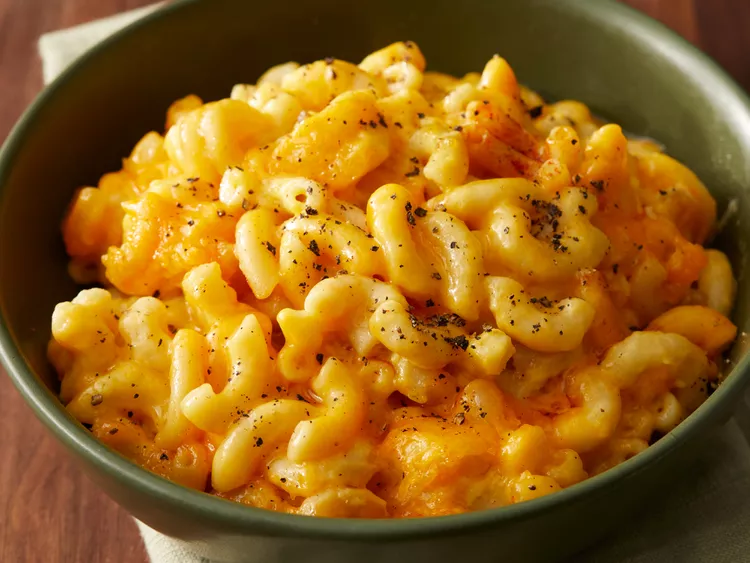

Mac and cheese recipe
Description
This crockpot mac and cheese recipe is creamy, comforting, and takes just moments to assemble in a slow cooker. Great for large family gatherings and to take to potluck dinners. It's always a big hit!
Ingredients
- 1 (16 ounce) package elbow macaroni
- ½ cup butter
- salt and ground black pepper to taste
- 1 (16 ounce) package shredded Cheddar cheese, divided
- 1 (5 ounce) can evaporated milk
- 2 eggs, well beaten
- 2 cups whole milk
- 1 (10.5 ounce) can condensed Cheddar cheese soup (such as Campbell's®)
- 1 pinch paprika, or as desired (Optional)
Steps
step 1
Fill a large pot with lightly salted water and bring to a rolling boil. Stir in macaroni and return to a boil. Cook pasta uncovered, stirring occasionally, until tender yet firm to the bite, about 8 minutes. Drain and transfer pasta to a slow cooker.
step 2
Add butter to pasta and stir until melted; season with salt and pepper. Sprinkle about 1/2 of the Cheddar cheese over pasta and stir.
step 3
Whisk evaporated milk and eggs together in a bowl until smooth; stir into pasta mixture.
step 4
Whisk milk and condensed soup together in a bowl until smooth; stir into pasta mixture.
step 5
Sprinkle remaining cheese over pasta mixture; garnish with paprika.
step 6
Cook on Low for 3 hours.
step 7
Serve hot and enjoy!
back